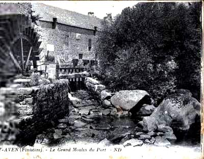

La meunière de Pontaro
The Pontaro Miller's Wife
Dialecte de Cornouaille
|
Dans "Aux sources", D. Laurent, semble attribuer les 3 premières versions manuscrites à Yves Péron, et la 4ème, qu'il intitule "Fanchon", pp. 155 et 156, à Anaïc Le Breton. - dans des recueils . Luzel: ("Sonioù, T.2", 1890), "Ar miliner laer", (coll. à Penvénan). . Bourgeois: ("Kanaouennoù pobl"), "Ar miliner laer", (coll. à Penvénan, différent du précédent). . Laterre: ("Kanaouennoù Breiz Vihan"), "Ar meliner", (coll. à Carhaix). . Herrieu: ("Guerzenneu ha Sonenneu Breiz Izel"), "Sonenn er meliner", (coll. à Saint-Aignan - Languidic). . Polig Mojarret ("Yaouankiz a gan", ca 1930), "Son ar miliner", (coll. à Grommel). . Fañch Dano: ("Fiselezed Groñvel"), "Na seiteg deiz ha triwec'h miz"), (Publication d'"Ar skol vrezhoneg", Brest, 1996). . Association "Ar gazeg veurzh": (CD "Gwrizioù", récent), "Garnizon, Lannuon", - dans des périodiques . Dufilhol: ("Mélusine III, 1886"), "Minour er Go". |
 Pont Aven, Grand Moulin du Port |
In "Aux sources", D. Laurent, apparently ascribes the first three handwritten versions to Yves Péron, and the fourth, titled by him "Fanchon", pp. 155 et 156, to Anaïc Le Breton. - in collections . Luzel: ("Sonioù, T.2", 1890), "Ar miliner laer", (coll. at Penvénan). . Bourgeois: ("Kanaouennoù pobl"), "Ar miliner laer", (coll. at Penvénan, different from the foregoing). . Laterre: ("Kanaouennoù Breiz Vihan"), "Ar meliner", (coll. in Carhaix). . Herrieu: ("Guerzenneu ha Sonenneu Breiz Izel"), "Sonenn er meliner", (coll. at Saint-Aignan - Languidic). . Polig Mojarret ("Yaouankiz a gan", ca 1930), "Son ar miliner", (coll. at Grommel). . Fañch Dano: ("Fiselezed Groñvel"), "Na seiteg deiz ha triwec'h miz"), (Published by "Ar skol vrezhoneg", Brest, 1996). . Association "Ar gazeg veurzh": (CD "Gwrizioù", récent), "Garnizon, Lannuon", - in periodicalss . Dufilhol: ("Mélusine III, 1886"), "Minour er Go". |
Mélodie - Tune
(Sol majeur: d'après l'harmonisation de Friedrich Silcher dans l'édition allemande de 1841)
| Français | English |
|---|---|
|
1. A Bannalec les filles sont
Enlevées pendant le pardon . Refrain Et mon moulin vire, Di-ga-di-ga-di! Et mon moulin va, Di-ga-di-ga-da! 2. On y voit les gars parader Sur de grands chevaux harnachés. Refrain 3. A leurs chapeaux des fleurs nouvelles Pour séduire les demoiselles. 4. Oui, mais Guillaume le bossu Pleure sa Fanchon disparue. 5. - Tailleur, ne vous lamentez pas, Fanchon, on la retrouvera. 6. A Pontaro, dans le moulin Le jeune baron la retient. 7. - Toc, toc, toc, écoute, meunier, Fanchon, il faut la ramener! 8. - Je n'ai vu qu'une fois Fanchon. C'était au moulin du baron. 9. Une fois ici près du pont Portant une rose en bouton 10. Une coiffe blanche de soie Qui n'est pas un cadeau de toi, 11. Et un corset noir en velours Galonné d'argent blanc autour, 12. Tenant au bras une corbeille Pleine de fruits mûrs et vermeils. 13. Des fruits du jardin du manoir, Et une guirlande en sautoir. 14. Elle se mirait dans l'étang. Pas laide du tout, non vraiment! 15. Elle a chanté une heure entière: - Je voudrais être la meunière. 16. La meunière et demeurer donc, Au moulin du jeune baron.- 17. O Meunier ne te moque pas, Ma chère Fanchon, rend-la moi. 18. - Même pour cinq cents écus, non, Je ne te rendrai pas Fanchon. 19. Non, ta Fanchon tu n'auras point. Elle va rester au moulin. 20. Non, jamais plus tu ne l'auras Je lui ai mis la bague au doigt. 21. Elle va rester au moulin Du seigneur Yves, un bon chrétien. - 22. Les meuniers sont de gais lurons. Ils allaient chantant leurs chansons. 23. Chantant et sifflant à toute heure: - Nous aimons bien la crêpe au beurre! 24. Oui, la crêpe de sarrasin, Et un peu du sac de chacun. 25. Du sac de chacun, savez-vous? Mais les jolies filles surtout. Et mon moulin vire, Di-ga-di-ga-di! Et mon moulin va, Di-ga-di-ga-da! Pardon = kermesse Trad. Christian Souchon (c) 2008 |
1. Bannalec's
Pardon
is a trap
Where pretty lasses are kidnapped. Chorus And my mill does spin, Di-ga-di-ga-din, And my mill does go, Di-ga-di-ga-do! 2. There you can see the lads riding Big horses with rich harnessing. Chorus 3. Who adorn their hats with posies To please and impress the lassies. 4. Willie the hunchback is distressed: He lost Fanny, his fair mistress. 5. - Little tailor, stop worrying I know where Fanny is hiding. 6. She's in the Mill of Pontaro With the young Baron, don't you know? 7. - Knock-knock, miller, listen to me. Bring back to my house my Fanny. 8. - In the Baron's mill, only once Did I notice Fanny's presence. 9. It was near the bridge here, I guess. She wore a little rose on her breast, 10. And a headdress, as white as snow, You didn't give her, for all I know. 11. Besides, she wore a black bodice With a fine white silver braid piece. 12. She had a basket full of fruit, Quite mellow and golden to boot. 13. Fruit picked in the manor's orchard, Tailor, which fine flowers covered. 14. She was mirrored by the brook. Not to be despised was her look! 15. She crooned: - For the rest of my life, I wish I were a miller's wife 16. Deep in my heart it is my will I should live in the Baron's mill. - 17. - Miller, stop making fun of me! Give me back my pretty Fanny! 18. - Five hundred crowns if you gave me, You would not get back your Fanny. 19. She would not, for five hundred crowns, Renounce the mill of the Baron. 20. Try as you may, she won't give in. I've put on her finger my ring . 21. She'll stay under Lord Yves's guard, A Christian held in high regard! - 22. Millers are merry companions! They all set to singing a song 23. Now they keep singing and whistling: - For pancakes I have a liking! 24. For pancakes taken from the bags, Of all our dear customer lads. 25. Nothing tastes well like stolen food, Stolen girls are above all good. And my mill does spin, Di-ga-di-ga-din, And my mill does go Di-ga-di-ga-do. Pardon = fair Transl. Christian Souchon (c) 2008 |
.
|
FRANCOISE LA MEUNIERE P.28 (4) Julien Le Cac'h a du chagrin: il a perdu ses grands bœufs , et le plus jolie de ses filles P.29 (5) - Julien Le Cac'h, consolez-vous, votre fille Françoise n'est pas perdue: (6) Elle est là-bas, dans le moulin de son parrain , (9) Et porte trois bouquets de roses sur son cœur. (23) Le bruissement du moulin (semble) dire: "Les crêpes au beurre sont bonnes: (24.2) Il y a dans chaque sac de quoi en faire un peu." Variante : (1) Il y a à Bannalec un pardon où l'on vole les filles. FANCHONNETTE 1 P.121 (a) Fanchon, à ce que je vois, s'en va au moulin. Elle porte un tablier de toile. Tablier de toile et chaussures de cuir: C'est pour aller voir son amant, le meunier . - Bien le bonjour, joli meunier! Toujours au moulin, et à moudre? Variante (b) - Viens avec moi dans la cabane au-dessus de l'eau. Le moulin n'en moudra que mieux. Oui, je vais faire de la farine avec ce grain. Et en attendant qu'elle aille dans le sac, viens la fille, me donner des baisers... - P.122 (15) La jeune fille disait:- J'aimerais tant être meunière. (c) - Vous le serez, n'en doutez pas. Et la meilleure ici qui soit. Et quand vous irez à la foire, vous aurez toujours, en poche, de quoi vous payer une bouteille. Réjouissez-vous, Françoise,... lait de vos seins....Ce n'est pas le cas d'un meunier. FANCHONNETTE 2 P.136 - N'entends-tu pas, meunier? (17.2) Ramène-moi ma fille chez moi! (20) - Votre fille Françoise n'est plus à vous: je lui ai mis la bague au doigt. - (22) Les garçons meuniers sont de gais lurons qui ne cessent de siffloter. (23) Et le chant qu'ils sifflent dit... Variante (7) - Toc, toc, toc, Jean Le Boscler ! Ramène ma fille Fanchon à la maison!- FANCHON P.155 (d) Ecoutez tous, O, écoutez...au sujet d'une jeune fille de Bannalec, qui s'est perdue en allant au pardon... (1) A Bannalec il y a un beau pardon, si ce n'est qu'on y vole les filles. (7) - Toc, toc, meunier qui êtes son parrain , rendez-moi ma fille Fanchon! - (2) On y voit des gars avec leurs grands chevaux bridés, (e) Et des manteaux bleus crochetés. P.156 (3) Et leurs chapeaux ne sont que fleurs, propres à séduire les filles. (7) - Toc, toc... - Au fond, tu sais bien que tu mens. (8) Je n'ai vu ta fille Fanchon qu'une seule fois, au moulin de Badon, (9) Un bouquet de roses sur son cœur et un dans chaque main. (15) Et elle disait bien souvent: "Meunier, je veux être ta femme; (16) Je souhaite de tout cœur être la meunière du Moulin de Badon ". (18) - Quand vous me donneriez cent écus, votre fille Fanchon, je ne vous la rendrais pas. (19) Vous n'aurez pas votre fille Fanchon: elle restera avec le meunier du moulin de Badon. (10) Et je lui achèterai une coiffe de lin jaune , en attendant... Variante (14) En se mirant dans la rivière, se dit qu'elle avait de quoi plaire. (f) Se penchant sur l'eau pour se voir, elle contemplait un miroir. |
FRANCES, THE MILLER'S WIFE P.28 (4) Julian Le Cac'h is worried: he has lost his big oxen and his prettiest daughter. P.29 (5) - Julian Le Cac'h, don't cry, your daughter Fanny is not lost: (6) She is down there, in her godfather's watermill, (9) wearing three bunches of roses on her bosom. (23) The mill's clickety-clack was saying: "Butter pancakes are good: (24.2) Take from each sackful a bit of flour to make them." Variant : (1) At Bannalec there is a "pardon" (indulgence fair) where girls are abducted. LITTLE FANNY 1 P.121 (a) Fanny, as I see, is going to the mill. She wears a linen apron. Linen apron and leather shoes: It's to please her lover, the miller . - Hello, handsome miller! Looking after your mill, as usual? Variant (b) - Come with me to the water cabin. The mill will grind all the better. Yes, I shall grind your oat to meal. But while the bag is being filled, come, lass, and give me kisses... - P.122 (15) The girl said:- I wish I were a miller's wife? (c) - You shall and no doubt! The happiest in the parish. And when you go to the fair, in your purse you'll always have the money for a bottle of wine. Be happy, Fanny,... the milk from your breasts....It never happens with a miller. LITTLE FANNY 2 P.136 - Don't you hear, miller? (17.2) Bring my daughter back home! (20) - Your daughter Fanny is not yours any more: I put a wedding ring on her finger. - (22) The miller lads are gay dogs: they keep whistling late and early. (23) And they whistle a song that says... Variant (7) - Knock, knock John Le Boscler ! Bring my daughter Fanny back home!- FANNY P.155 (d) Listen all, O, listen... about a Bannalec girl, who disappeared during the indulgence fair... (1) At Bannalec there is a fine fair, but for the girls who vanish away. (7) - Knock, knock! Miller, you are her godfather . Give me back my daughter Fanny! - (2) There we see lads with big harnessed chargers, (e) Covered with blue crocheted blankets. P.156 (3) And their hats are adorned with posies to impress the lasses. (7) - Knock, knock... - Admit that you are but a liar. (8) I saw your daughter Fanny but once at Badon Mill, (9) A rosy posy on her heart and one in each hand. (15) And oft did she say: "Miller, I want to be your wife; (16) Deep in my heart I wish to be the goodwife at Badon Mill ". (18) - Even if you gave me a hundred crowns, your daughter Fanny I would not give away. (19) You won't have your daughter back: she will stay with the miller at Badon Mill. (10) In the meantime I'll buy her a yellow flax headdress ... Variant (14) As she gazed at the reflection of her face in the river, she found she was attractive. (f) She bent over the water, and admired herself like in a mirror. |
Cliquer ici pour lire les textes bretons (imprimé et sténotypes).
For Breton texts (printed and handwritten records), click here.

|
Résumé
Cette chanson "a pour sujet un meunier de Pontaro [lieu-dit proche de Bannalec], qui enleva méchamment la belle d’un petit tailleur contrefait, la conduisit dans le moulin, et l’y retint sous la protection de son seigneur" (Argument du chant depuis 1839). La Villemarqué assure qu'on peut assigner à ce chant la date précise de 1420, car il mentionne le Baron de Quimerc'h, Hévin (Yves, en breton: Youenn), à qui appartenait à cette date le moulin de Pontaro (commune de Bannalec). Les chants du carnet de Keransquer Cette datation semble tout à fait contestable. L'examen du premier cahier de Keransquer montre que La Villemarqué a tiré les éléments de son poème, de trois chants, principalement: Ce chant tranche sur les autres par son caractère grivois. Ici pas de "Pardon". Fanchon met ses plus beaux atours et se rend chez le "meunier son amant" (he dousig miliner), pour une partie de plaisir décrite dans un couplet plein de sous-entendus scabreux, sans doute suivis d'autres que le jeune barde n'a pas notés. Le meunier s'engage à régulariser la situation de sa "victime". Une datation contestable A part les couplets 11 et 12, qui s'appesantisent sur les habits luxueux de la nouvelle meunière, et le couplet 25 qui décrit, en guise de conclusion, le "vol" des jolies filles comme une extension de la pratique de la "moûture", tous les couplets de "La meunière de Pontaro" ont leurs pendants dans les trois pièces ci-dessus. Comme on le voit, il n'est nulle part question de Guillaume le Bossu, ni de sa femme, ni du moulin de Pontaro. Et l'on cherche en vain l'équivalent du couplet 21: "Elle restera avec (gant) le seigneur Yves (La Villemarqué traduit: "elle restera dans le moulin du seigneur Hévin") qui est, en fait d'homme, un bon chrétien." Or c'est précisément l'allusion à ce baron de Quimerc'h et à sa qualité de propriétaire du moulin, désigné au couplet 6, comme étant celui de Pontaro, qui permet au jeune La Villemarqué de dater le chant de 1420. Un "parrain" devenu "baron" Il est un détail que l'on trouve à la fois dans "Françoise la meunière" (p.28 vers 6) et dans "Fanchon" (p.155, vers 7) et qui ne semble pas avoir retenu l'attention du jeune barde: le meunier est le parrain de la jeune fille: "ema du-ze e meil he faeron" (corrigé de "e baeron": elle est là-bas au moulin de son parrain, ) et "tok, tok, meiler paeron" (toc, toc, meunier et parrain). Chanson d'amour et chanson gaillarde Il en est de cette "son" comme des "gwerzioù": en circulant d'une région à l'autre, elle remplace les noms de lieux et de personnes par des noms connus du public local. Il est question dans les chants du manuscrit de Keransquer de Bannalec, du moulin de Badon, d'un Le Cac'h et d'un Le Boscler. Or le même chant a été collecté en Trégor (par Luzel et Alfred Bourgeois) et en Haute-Cornouaille, en Pays Fisel (autour de Rostrenen et Glomel). Ce sont d'autres localités qui sont citées: Rostrenen et La Roche-Derrien, au sud de Tréguier, mais l'histoire, telle qu'on peut la reconstituer à partir des quatre versions du carnet de Keransquer est aisément reconnaissable: un meunier engrosse une jeune femme en l'absence de son père. Ce dernier démasque le coupable en lui proposant d'être le parrain de l'enfant, dont la conception est décrite, dans la plupart des cas, à grand renfort de métaphores tirées de la meunerie. La Villemarqué a préféré la version "soft" (celle d'Anaïc Le Breton?) qui fait de cette chanson gaillarde une touchante chanson d'amour. On peut se demander s'il a fait le bon choix: la version "Gazeg Veurzh" qui est la plus complète, se signale par une langue imagée pleine de verve et de bonne humeur, maniée avec aisance qui tranche heureusement sur la plupart des pièces du recueil. Les gaillardises qu'elle contient seraient propres à la Cornouaille dont, paraît-il, les premiers collecteurs de tradition orale affirmaient qu'elle n'avait jamais produit autre chose: une raison de plus de douter de l'authenticité des pièces publiées par La Villemarqué dont l'essentiel provient de cette région. Le jeune barde a réutilisé, semble-t-il, une ligne de la version "hard", "Fanchonnette 1, dans son Clerc de Rohan, couplet 88 , où le traître accuse la dame innocente d'être allée: Planteur de rosiers, son amant!" Meunier voleur Les moulins à vent et à eau étaient, en raison des particularités climatiques et hydrographiques de la région, fort nombreux en Bretagne. Sur la seule presqu'île de Crozon il n'y avait pas moins de soixante-dix moulins à vent. La plupart de ces moulins étaient des moulins seigneuriaux. C'est ainsi que l'auteur du chant La croix du chemin était, nous dit La Villemarqué, un clerc, fils du meunier du marquis de Pontcallec. Au 19ème siècle, le nombre des moulins décrut et plus d'un meunier s'autorisa à abuser de sa situation de monopole. L'usage voulait que le meunier se paye en prélevant sur chaque boisseau une certaine quantité de farine, allant du seizième au douzième. De plus, toute l'alimentation, en Bretagne était à base de farine: crêpes, galettes, pain et bouillie. On accusait donc le meunier soit de prélever d'avantage que son dû de farine, soit d'humecter celle-ci pour en augmenter le poids et fausser le partage. La deuxième accusation était, comme on le voit ici, celle de libertinage, sans doute parce que c'était souvent les femmes qui étaient chargées de porter le grain à moudre au moulin. De ce fait, aussi le meunier était au courant de tout. Tout comme le tailleur, sur qui pesaient les mêmes soupçons, le meunier était souvent chargé d'être l'intermédiaire pour les demandes en mariage... L'expression "miliner laer", meunier voleur, revient comme un leitmotiv dans les chants cités sur cette page. On notera que l'enfant illégitime, une autre "spécialité" du meunier, est, en breton, un mot de la même famille: "laeradenn" ("laer", tout comme "larron" en français, prolonge le latin "latro", le voleur). Cet anathème du meunier se retrouve dans d'autres expressions: "Lard evel ur pemoc'h milin" (gras comme un cochon de moulin) , et Ingaler kaoc'h marc'h" (partageur de crotin de cheval) qui était une autre façon de désigner un membre de la profession maudite. La Bretagne n'était pas la seule région à faire au meunier une détestable réputation. On trouvera ci-après un lien vers un chant anglais, dont la mélodie est utilisée pour un chant "Whig". Il s'agit du "Jolly Miller" publié par Thomas d'Urfey dans ses "Songs of Wit and Mirth" (Chants spirituels et joyeux) en 1719, personnage aussi peu recommendable que son confrère breton. Enfin notons que dans une célèbre chanson de Jacques Dutronc, lorsque "Paris s'éveille", ce sont les boulangers qui "font les bâtards": un sous-entendu à ajouter à la longue série que recèle la chanson bretonne. |
Résumé
As stated in the "Argument", unchanged since 1839, this song is "about the miller of Pontaro mill [a place near Bannalec] who nastily abducted the lady-love of a little misshapen tailor, took her to the said mill and kept her there under his lord's protection". La Villemarqué dates this song to the year 1420, as it mentions the name of the owner of Pontaro Mill (Parish of Bannalec), Baron Hévin (Yves, in Breton: Youenn) of Quimerc'h. The songs in the first Keransquer copybook That this song should be that old is very questionable. It appears that La Villemarqué's poem chiefly draws on three songs noted in the Keransquer first copybook. This song differs from the rest by its bawdy character. There is here no "Pardon". Fanny puts on her Sunday best and goes to "the miller, her lover" (he dousig miliner) to have sex, as described in a few lines full of improper double-entendres. Very likely La Villemarqué refrained from committing to paper the whole narrative. The miller promises to legalize his "victim's" situation. A questionable dating Except stanzas 11 and 12 that lengthily describe the luxurious clothes of the new miller's wife and stanza 25 stating that "stealing" pretty girls is akin to cheating on milling fees, all stanzas in "The Pontaro Miller's wife" have their counterparts in the three pieces above. As we see, nowhere in these songs is there a mention of William the Hunchback, of his wife, or of Pontaro Mill. And we wood seek in vain the like of stanza 21: "She will stay with (gant) the lord Yves (translated by La Villemarqué as "she will stay at the mill of Lord Hévin") who is a good Christian". Now it is precisely the hint at this Baron Quimerc'h who was the owner of a mill known as the Pontaro mill, as stated in stanza 6, that justifies that the song should be dated to 1420. "Paeron" or "Baron"? One detail in both "Frances the Miller's wife" (P.28, line 6) and "Fanny" (P.155, line 7) doesn't seem to have drawn the young Bard's attention: the miller is the girl's godfather : "ema du-ze e meil he faeron" (the corrected form of "e baeron": she is in her godfather's yonder mill) and "toc, toc, meiler paeron" (knock, knock, miller-godfather). Love song and bawdy song In this "son", like in many "gwerzioù", the song while circulating from one area to the other exchanged the personal names and place names it contained for others more appealing to the local audience. In the Keransquer MS the songs refer to Bannalec, to Badon Mill, to a named Le Cac'h and a named Le Boscler. Now the same song was gathered in the Tréguier area (by Luzel and Alfred Bourgeois) and in Upper Cornouaille, in the so-called "Pays Fisel" (around Rostrenen and Glomel). And here, other place names are referred to: Rostrenen and La Roche-Derrien (south of Tréguier), though the story, as it may be reconstructed from the four versions in the Keransquer MS, is easily recounted: a miller gets pregnant a young woman whose father is absent. The latter exposes the culprit by offering him to become his grand son's godfather. The begetting of the child is depicted with a great many metaphors drawn from milling technique. La Villemarqué preferred the "soft" version (which Anaïc Le Breton taught him presumably) and made of this ribald story a touching love song. He hardly made a good choice: the "Gazeg Veurzh" version, the most complete one, stands out by the deftly handled language it uses, full of imagery, of witty eloquence and good humour, sharply contrasting with most pieces of the Barzhaz. The bawdry it contains is allegedly peculiar to Cornouaille, and the first folk song collectors used to assert that this area never produced anything else, another reason to question the authenticity of the songs collected by La Villemarqué who chiefly investigated this region. The young bard apparently used a line found in the "hard" version, "Little Fanny 1", in his Clerk of Rohan, stanza 88 , in which the traitor clerk reproaches the innocent lady for having gone to a ball: Acts here as her rose gardener, too." Wind and water mills Due to the climatic and hydrographical conditions prevailing there, former Brittany was teeming with wind and water mills. On the sole Crozon peninsula, for instance, there were no less than seventy wind mills. Most of the mills were "seigniorial mills": for instance, the author of the song The Cross by the Way-side was, so writes La Villemarqué, a clerk whose father was miller to the marquis of Pontcallec. In the nineteenth century the number of mills decreased and many millers were tempted to avail themselves of their increasing monopoly. It was usual that the miller would retain as his remuneration a certain portion of flour taken from each bushel ground, between one sixteenth and one twelfth. On the other hand in Brittany, people mostly fed on oat, rye or wheat meal: pancakes, flat cakes, loaves and porridge. Therefore the miller was accused to retain more than his due proportion of meal, or to moisten the flour to make it heavier and distort the apportionment. The second reproach made to them was, as we saw, that they were womanizers, maybe because the task of bringing the grain to the mill was often performed by women. Therefore, too, the miller was aware of everything. Like the tailor who also was suspected with similar schemes, he was often chosen as matchmaker. The phrase "miliner laer" (thief miller) is repeated like a "leitmotiv" in the songs quoted on this page. It is remarkable that an illegitimate child (often mentioned in connection with a miller) is designed by a word related to "laer" (derived from Latin "latro", the thief):"laeradenn. The anathema against the miller is expressed in other sayings: "Lard evel ur pemoc'h milin" (as fat as a mill pig) , and Ingaler kaoc'h marc'h" (horse dung sharer) which was another way to refer to this accursed calling. Brittany was not the only country were millers suffered such disrepute. The list of songs below ends up with a link to an English song, whose tune is the vehicle of a Whig song. The original, titled "Jolly Miller", was published by Thomas d'Urfey in his "Songs of Wit and Mirth" in 1719. It features a miller who is every bit as disreputable as his Breton counterpart. Last but not least a famous ditty in the repertoire of the French songster of the sixties, Jacques Dutronc, stated that when "Paris awakes", not the millers, but the bakers, "make bastards" (bâtard= Vienna roll), a play on words completing the hoard hidden in the Breton song. |